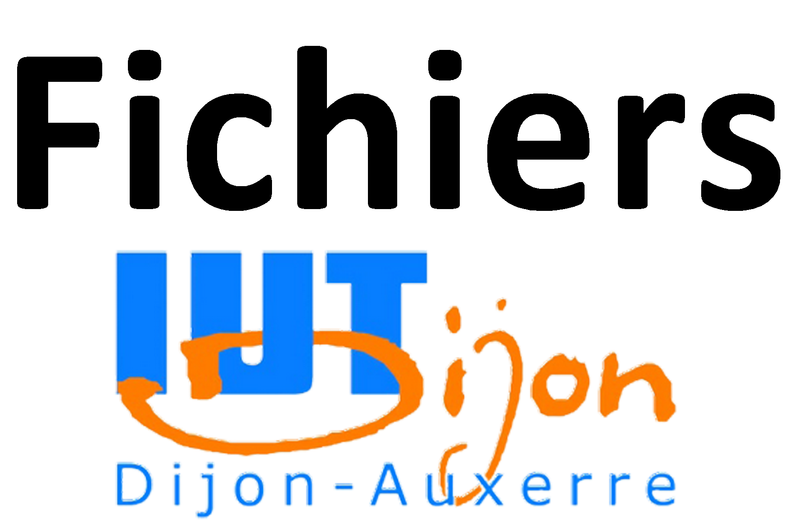
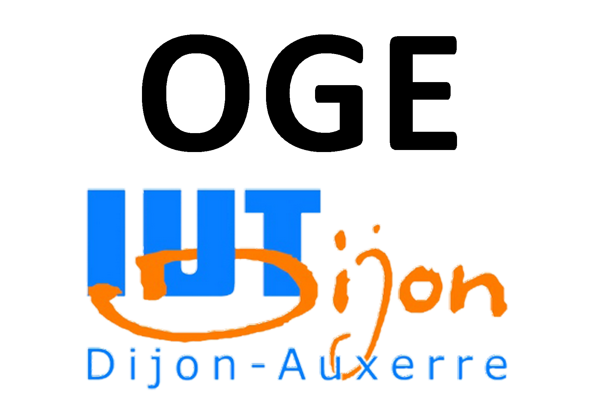

it department
 

Tutored projects are designed to facilitate the acquisition of practice and the handling of the concepts taught. They should thus develop organizational and methodological skills.
Carried out individually or collectively, they should improve the quality of personal work and enable learning of professional group work. The projects must lead to a professional integration, monitored and evaluated by the tutor teachers.
This site has been realized within the framework of a tutored project (see the about page).
There are many examples of projects :
The PPP is a subject taught to give the student a precise idea of the jobs in the "Computer Science" speciality and what they require in terms of personal skills.
It must lead the student to match his immediate and future professional wishes, his personal aspirations and his capacities in order to design a training path consistent with the chosen profession(s) and to become an actor of his orientation.
In addition to the tutored projects, work is regularly due in almost all subjects.
From the algorithmic project to the more classical lectures, they improve group cohesion and organization and increase students' autonomy.